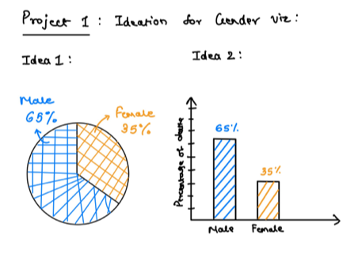

Project 1: Documentation
Dr. John Snow's map helped to create a link between contaminated water and cholera. I have designed this visualization for the H517 Fall 2021 - Visualization Design, Analysis, and Evaluation class. The visualization has been created using the web development tools like d3.js, SVG, HTML, and CSS. Developing this visualization is to help users understand and gain insights about cholera spread in London.
Step 1: Understanding the requirements
- The streets data helps us to plot the streets on the map.
- The pump data help us locate the pump location on the map.
- The deaths data provide us with information about the number of deaths that occurred on a particular day.
- The death age-sex data gives us information about the victim's age, sex, and location where its death occurred.
Step 2: Ideate
- I first created the map. The main reason to make the map is to visualize the deaths that occurred.
I differentiated the location of pumps and deaths with color.
- The second step was to create graphs that would provide more information about the data provided.
I had two ideas for the timeline graphs, one a time series line chart and the second a bar graph.
I decided to go with the bar graphs as it is easy to distinguish each date for deaths.
While the timeline shows continuity, a bar graph provides a break for each day.
- I also had two ideas for visualizing total deaths for each gender.
First, I went with a bar graph, but I felt this chart was to visualize the difference between total deaths in both genders,
and instead of seeing just numbers seeing a percentage is better for comparison. Pie charts are famous for percentage plots.

- I decided to go with a bar graph for the age distribution of the deaths since I had many categories for the age distribution.
- I tried designing the dashboard in two orientations.
First keeping the map at top and all other visualizations at the bottom.
Second keeping the map in the left side and all the visualizations in the right side.
After competitive analysis I chose to go with the second option as it becomes easy to interact with the visualizations
when they are placed side by side. Also usually users liked to see all the controls on the right side
and the results on the left side of the screen.
Step 3: Color selection
I thought about applying color to gender categories only.
I didn't want to use color for age distribution categories since that would add too much color to the dashboard.
I went with the colors blue and orange and put them through a color blindness checker tool.
The colors selected cleared all the below criteria:
- Red-Weak/Protanomaly
- Green-Weak/Deuteranomaly
- Blue-Weak/Tritanomaly
- Red-Blind/Protanopia
- Green-Blind/Deuteranopia
- Blue-Blind/Tritanopia
- Monochromacy/Achromatopsia
- Blue Cone Monochromacy
Step 4: Investigation with the help of Dashboard
If I was Dr. John Snow and I wanted to start investigating the spread of Cholera, I would like to see where each cholera death occurred on the map.
That would give me insight into the general area that has been affected by the disease.
The next question would be where did the first death happen, then the next?
Cholera is a waterborne disease, and this would help me see how the disease started spreading around.
Next, to gain more insight about the disease, what age group does cholera become fatal in?
I can see from the bar graph that it is most fatal to children from age 0 - 10 and older people above the age of 80.
Generally, people with weaker immune systems. The least deaths are present in the age group of 11-20.
The next question would be to see if there was a gender aspect to Cholera? From the pie chart, I can see that for male and female the total death percentage
is almost equal and thus I won't conclude if sex affects fatality for the disease.